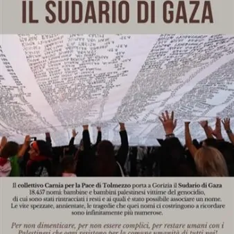

da mer 4 nov a gio 5 nov
Il Sudario di Gaza - Eventi di Pace
Due appuntamenti di Pace a Gorizia: mercoledì 4 novembre - alle ore 20.00 Piazza Vittoria In Piazza Vittoria sarà portato l’enorme Sudario di Gaza, composto e portato ovunque dal Collettivo Carnia per la Pace di Tolmezzo. L’iniziativa vuole sensibilizzare i cittadini sul…
 Indicazioni
Indicazioni
- Costi e prenotazioni
- Costo non indicato · Prenotazione non indicata
- Programma
- Programma da verificare. Apri la fonte ufficiale per orari e possibili aggiornamenti.
- In caso di maltempo
- Nessuna indicazione specifica pubblicata.
- Note
- Acquisito automaticamente dalla fonte.
L’EVENTO
Descrizione completa
Due appuntamenti di Pace a Gorizia:
mercoledì 4 novembre - alle ore 20.00
Piazza Vittoria
In Piazza Vittoria sarà portato l’enorme Sudario di Gaza, composto e portato ovunque dal Collettivo Carnia per la Pace di Tolmezzo. L’iniziativa vuole sensibilizzare i cittadini sul genocidio in corso nella striscia di Gaza e sulle violenze dei coloni israeliani in Cisgiordania.
Il lenzuolo, pur essendo lungo 25 metri e largo oltre dieci, riporta 18.457 nomi, ma non è sufficiente a contenere i nomi di tante altre migliaia di bambini che sono stati barbaramente uccisi in questi anni di guerra.
Non si può rimanere indifferenti davanti a questa terribile strage. Spesso ci si sente impotenti davanti a così grande ingiustizia. La presenza in piazza e la presentazione del sudario sono gesti forse piccoli, ma che inviano un profondo messaggio e una richiesta pressante di una pace autentica, fondata sulla verità e sulla giustizia.
giovedì 5 novembre - alle ore 17.30
Chiesa Evangelica, via Diaz 18/A
Inaugurazione della mostra fotografica da Gaza, significativamente intitolata “Là dove resiste la Vita”, curata dal fotografo palestinese Fadi A. Thabet.
Anche a Gorizia viene data voce al grido che ci raggiunge sempre più forte, con l’appello dei cristiani di Terra Santa e le coinvolgenti immagini di un artista della fotografia residente a Gaza.
Un momento di riflessione sul genocidio silenzioso in atto. L’invito è rivolto a tutti, ma si ritiene importante la presenza dei cristiani, promotori dell’appello e specialmente dei preti diocesani, chiamati a farsi consapevoli portavoce della richiesta pressante di ascolto e di condivisione.
Oltre al pastore Hans Jens, saranno presenti alcuni testimoni d’eccezione, quali don Nandino Capovilla, Anna Babini e Giorgio Brunello, da anni impegnati in una costante informazione di intensa solidarietà e approfondita informazione intorno ai tragici eventi chi si stanno verificando in Palestina.
IL PROGRAMMA
Programma e orari
Appuntamenti raccolti dalle fonti elencate. Dove manca un orario, non è ancora disponibile in questa scheda.
Programma pubblicato
- Dal 2026-11-04 al 2026-11-05
INFORMAZIONI UTILI
Prima di partire
- Controllare la fonte prima di partire.
ORGANIZZAZIONE